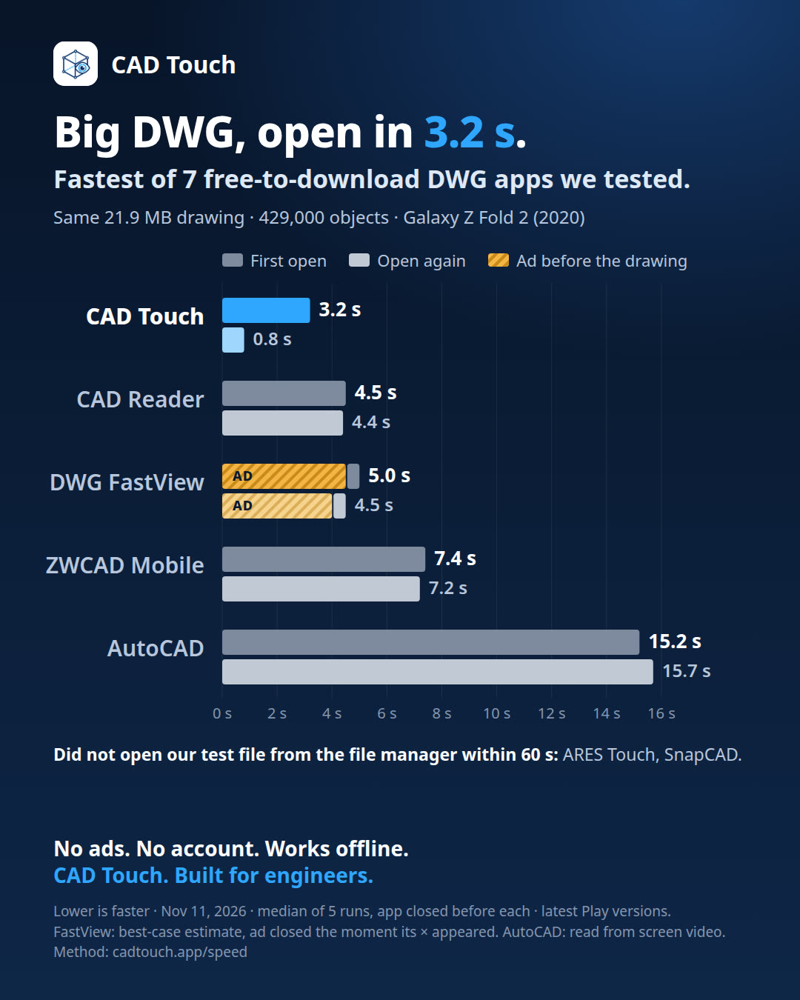

DWG viewer speed test on Android: 7 apps, one 21.9 MB drawing
Result: on a Galaxy Z Fold 2, CAD Touch opened a 21.9 MB DWG drawing with about 429,000 objects in 3.2 seconds the first time and in 0.8 seconds the second time. It was the fastest of the 7 free-to-download DWG apps we tested. The next fastest needed 4.5 seconds.

Results
| App (version) | First open | Open again | Ad before the drawing |
|---|---|---|---|
| CAD Touch 1.7 | 3.2 s | 0.8 s | No |
| CAD Reader 3.9.0 | 4.5 s | 4.4 s | No |
| DWG FastView 5.18.9 | 5.0 sbest case, see notes | 4.5 sbest case, see notes | Yes, a full-screen ad in all 10 runs |
| ZWCAD Mobile 5.6.9 | 7.4 s | 7.2 s | No |
| AutoCAD 6.24.1 | 15.2 s | 15.7 s | No (a subscription banner over the drawing) |
| ARES Touch 26.0.0 | The drawing did not appear within 60 s | A subscription offer on opening | |
| SnapCAD 1.2.49 | Did not open the file from the file manager | An ad banner | |
Every run, in seconds (first open / open again):
- CAD Touch: 3.0, 4.0, 3.2, 3.2, 4.2 / 0.8, 1.9, 1.8, 0.7, 0.8
- CAD Reader: 4.8, 4.2, 4.5, 4.3, 4.5 / 4.7, 4.7, 4.4, 4.4, 4.3
- ZWCAD Mobile: 7.5, 7.2, 7.5, 7.4, 7.2 / 7.0, 7.1, 7.4, 7.3, 7.2
- AutoCAD: 14.1, 16.3, 15.2, 14.8, 18.0 / 15.7, 15.7, 18.6, 14.5, 14.2
- DWG FastView: the close button of the ad appeared after 15, 5, 4 and 3 s (first open; one run is not counted, see notes) and after 3, 4, 4, 3 and 5 s (open again); the drawing was visible about 0.5 s after the ad was closed.
How we tested
- Phone: Samsung Galaxy Z Fold 2 (SM-F916B, released in 2020), Android 13, on Wi-Fi and on the charger.
- Drawing: an invented building drawing made for this test, 21.9 MB, DWG 2018 format, about 429,000 objects. We used five copies that differ only in one small text, so no app had the drawing prepared in advance.
- Apps: CAD Touch 1.7, and for the other apps the latest versions on Google Play on the test day.
- Each run: the app is fully closed (force stop). The drawing is opened the way you would open it from the phone's file manager. The screen is recorded, and the time runs from the first change on the screen until the whole drawing is drawn and still.
- First open: a copy of the drawing the app has never seen.
- Open again: the same copy once more, after the app was closed again.
- Result: 5 runs for each case, and the median is reported. Exceptions: 4 counted runs for the first open of DWG FastView, 2 tries for ARES Touch and 3 for SnapCAD (see notes).
Notes and limits
- This is one phone and one drawing. On another device or with another drawing the times and the order can be different.
- DWG FastView showed a full-screen ad on every open, and the drawing was ready behind it. Its numbers are a best case: we assume the ad is closed the moment its close button appears. The moment the button appeared was read from the recording in 1-second steps. One first-open run is not counted, because the tap on the close button opened the advertiser's page.
- ZWCAD Mobile was measured in its browse mode, without accepting its terms or signing in.
- AutoCAD moves the view while its banners appear, so the moment the drawing was first fully shown was read by hand from the recording, in 0.25-second steps.
- ARES Touch showed a black screen for 60 seconds in two tries. SnapCAD reported that the drawing structure could not be read, in three tries. Both may behave differently when the file is opened from inside the app.
- The time includes starting the app, and the screen recording itself uses some of the phone's processor, so every app is a little slower here than in everyday use.
- We did not measure editing, rendering quality or anything other than the time to open this drawing.
Why CAD Touch reopens so quickly
The first time, CAD Touch reads the DWG and keeps a copy that is ready to draw in the app's cache on the phone. The next time it opens that copy, which is why the second open took 0.8 seconds (median) in our test. If Android clears the app's cache, the next open is a first open again. Nothing is uploaded: the drawing never leaves your device.
Questions about the test? Write to hello@cadtouch.app.